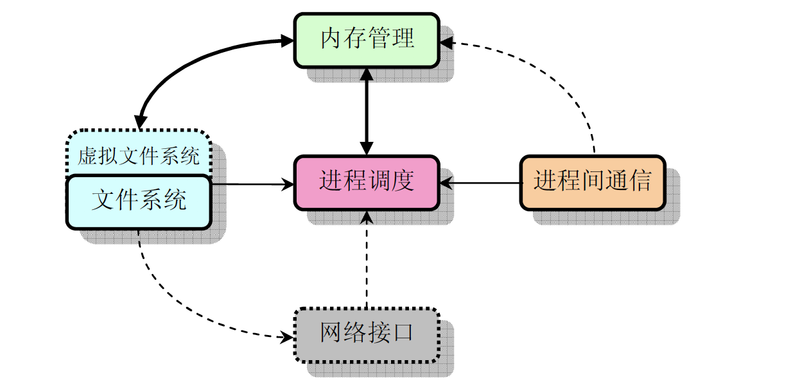
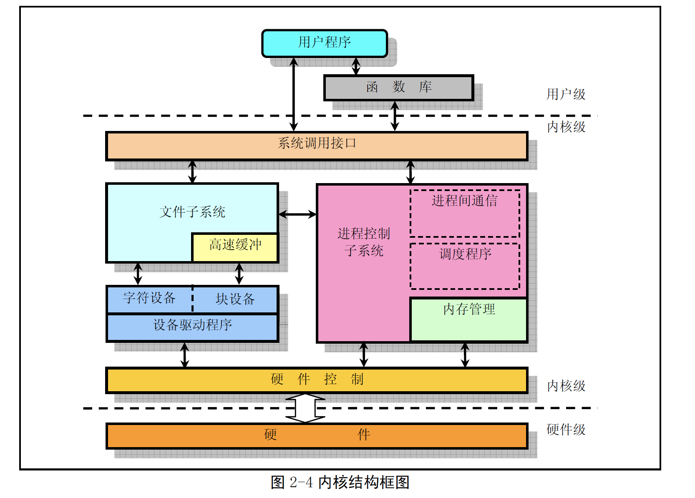
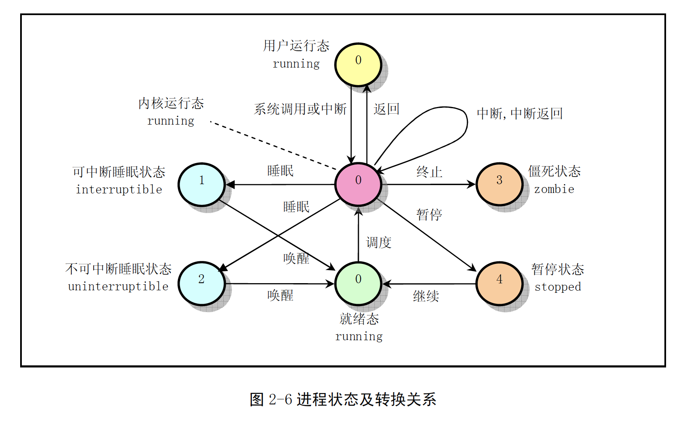
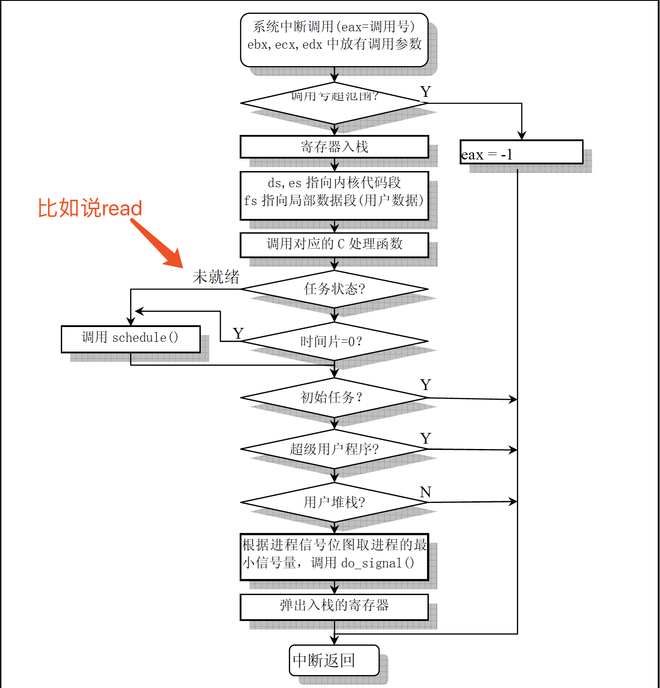

一个有关内核开发的wiki,里面有很多不错的知识
一些intel的古老文档
实模式与保护模式
refer:https://www.geek.com/chips/difference-between-real-mode-and-protected-mode-574665/
为什么需要划分实模式与保护模式?
Prior to protected mode, multiple programs could be running in memory at the same time, but any program could access any area of memory and, therefore, if malicious or errant, for example, could take down the entire system.
concepts
Real Mode
实模式下程序可以访问所有的内存空间。 如果一个程序访问了它不该访问的地方就可能造成其他程序的异常或系统奔溃
Protect Mode
保护模式,在硬件级别限制可访问的内存区域
通过内存分页机制允许每个进程都可以访问最大的内存区域。
数据只有在真正需要的时候才被换入内存. 内存不足的时候,会用swap file 顶替
计算机启动过程
按下电源按钮
CPU从指定位置开始读取指令，逐一执行
BIOS初始化
硬件检查&寻找可引导设备
内核
Linux 内核的主要用途就是为了与计算机硬件进行交互，实现对硬件部件的编程控制和接口操作，
调度对硬件资源的访问，并为计算机上的用户程序提供一个高级的执行环境和对硬件的虚拟接口。
内核体系


进程调度模块
进程调度模块用来负责控制进程对CPU 资源的使用。所采取的调度策略是各进程能够公平合理地访问CPU，同时保证内核能及时地执行硬件操作。
内存管理模块
内存管理模块用于确保所有进程能够安全地共享机器主内存区，同时，内存管理模块还支持虚拟内存管理方式，使得Linux 支持进程使用比实际内存空间更多的内存容量。并可以利用文件系统把暂时不用的内存数据块会被交换到外部存储设备上去，当需要时再交换回来。
文件系统模块
文件系统模块用于支持对外部设备的驱动和存储。虚拟文件系统模块通过向所有的外部存储设备提供一个通用的文件接口，隐藏了各种硬件设备的不同细节。从而提供并支持与其它操作系统兼容的多种文件系统格式。
进程间通信模块
进程间通信模块子系统用于支持多种进程间的信息交换方式。
网络接口模块
网络接口模块提供对多种网络通信标准的访问并支持许多网络硬件。
系统定时
时钟中断处理时更新jiffies变量，判断时间片是否用完，是否需要进行调度
进程模块

https://eklitzke.org/uninterruptible-sleep
TASK_INTERRUPTIBLE
A process which is placed in the TASK_INTERRUPTIBLE state will sleep until either (1) something explicitly wakes it up, or (2) a non-masked signal is received
eg:
执行sleep(30) 命令的进程就会处于interruptible sleep 状态
strace 演示
1
2
3
4
5[root@iZ2ze0fgielr9er134vdz0Z ~]# strace -f -p 2014
strace: Process 2014 attached
restart_syscall(<... resuming interrupted nanosleep ...>) = ? ERESTART_RESTARTBLOCK (Interrupted by signal)
--- SIGTERM {si_signo=SIGTERM, si_code=SI_USER, si_pid=4177, si_uid=0} ---
+++ killed by SIGTERM +++TASK_UNINTERRUPTIBLE
The TASK_UNINTERRUPTIBLE state, instead, ignores signals; processes in that state will require an explicit wakeup before they can run again.
进程的抢占发生在进程处于用户态执行阶段，在内核态执行时是不能被抢占的。
read,write操作会sleep啊，此时还是会被抢占啊
孤儿进程
一个父进程退出，而它的一个或多个子进程还在运行，那么那些子进程将成为孤儿进程。孤儿进程将被init进程(进程号为1)所收养，并由init进程对它们完成状态收集工作
僵尸进程
一个进程使用fork创建子进程，如果子进程退出，而父进程并没有调用wait或waitpid获取子进程的状态信息，那么子进程的进程描述符仍然保存在系统中。这种进程称之为僵死进程。
解决:
kill 父进程
然后子进程会托管给init进程进行回收
任务的堆栈
每个任务都有两个堆栈，分别用于用户态和内核态程序的执行，并且分别称为用户态堆栈和内核态
堆栈。这两个堆栈之间的主要区别在于任务的内核态堆栈很小，
CPU load
https://www.kernel.org/doc/html/latest/admin-guide/cpu-load.html
load的不可靠
linux的load=runnable + uninterruptible sleep( It is mostly used by device drivers waiting for disk or network IO (input/output). )
问题:
模拟出一个uninterruptible sleep状态来?
socket慢速写没用
内存模块
使用虚拟内存向每个进程提供足够大的可寻址空间。
通过缺页中断完成数据的读取。
缺页中断处理过程可能会涉及page swapping
注意:
我们申请一大块连续内存，在物理内存上不一定是连续的，只是在虚拟内存地址上是连续的而已.
真实的物理地址是要通过页表进行换算的。
HugePage
BIOS
BIOS (Basic Input/Output System) was created to offer generalized low-level services to early PC system programmers. The basic aims were: to hide (as much as possible) variations in PC models and hardware from the OS and applications, and to make OS and application development easier (because the BIOS services handled most of the hardware level interface).
These BIOS services are still used (especially during bootup), and are often named “BIOS functions”. In Real Mode, they can be easily accessed through software interrupts, using Assembly language.
中断
这里简单介绍一下中断。中断是由硬件或者软件产生的，当中断产生的时候， CPU 将得到通知。这个时候， CPU 将停止当前指令的执行，保存当前代码的环境，然后将控制权移交到中断处理程序。当中断处理程序完成之后，将恢复中断之前的运行环境，从而被中断的代码将继续执行
硬中断
Hardware interrupts are generated by hardware devices (network cards, keyboard controller, external timer, hardware senors, …) when they need to signal something to the CPU (data has arrived for example).
Since these can happen very frequently, and since they essentially block the current CPU while they are running, kernel hardware interrupt handlers are written to be as fast and simple as possible.软中断
比如系统调用
If long or complex processing needs to be done, these tasks are deferred using a mechanism call softirqs. These are scheduled independently, can run on any CPU, can even run concurrently (non of that is true of hardware interrupt handlers).
系统调用

- man syscalls 查看系统调用列表
信号
在UNIX 系统中，信号是一种“软件中断”处理机制。有许多较为复杂的程序会使用到信号
可以写一些信号处理函数来响应ctrl+c等操作。
硬盘
当程序需要读取硬盘上的一个逻辑块时，就会向缓冲区管理程序提出申请，而程序的进程则进入睡
眠等待状态。缓冲区管理程序首先在缓冲区中寻找以前是否已经读取过这块数据。如果缓冲区中已经有
了，就直接将对应的缓冲区块头指针返回给程序并唤醒该程序进程。若缓冲区中不存在所要求的数据块，
则缓冲管理程序就会调用本章中的低级块读写函数ll_rw_block()，向相应的块设备驱动程序发出一个读
数据块的操作请求。该函数就会为此创建一个请求结构项，并插入请求队列中。为了提供读写磁盘的效
率，减小磁头移动的距离，在插入请求项时使用了电梯移动算法。
读写都是有队列的
当对应的块设备的请求项队列空时，表明此刻该块设备不忙。于是内核就会立刻向该块设备的控制
器发出读数据命令。当块设备的控制器将数据读入到指定的缓冲块中后，就会发出中断请求信号，并调
用相应的读命令后处理函数，处理继续读扇区操作或者结束本次请求项的过程。例如对相应块设备进行
关闭操作和设置该缓冲块数据已经更新标志，最后唤醒等待该块数据的进程。
唤醒->只是将对应的进程状态标记为可运行，必须等到调度程序调度后才会真正执行该进程
Page Cache Buffer Cache
Buffer Cache->disk block cache
Page Cache-> file io cache
高速缓冲中存放着最近被使用过的各个块设备中的数据块。当需要从块设备中读取数据时，缓冲区管理程序首先会在高速缓冲中寻找。
如果相应数据已经在缓冲中，就无需再从块设备上读。如果数据不在高速缓冲中，就发出读块设备的命
令，将数据读到高速缓冲中。当需要把数据写到块设备中时，系统就会在高速缓冲区中申请一块空闲的
缓冲块来临时存放这些数据。至于什么时候把数据真正地写到设备中去，则是通过设备数据同步实现的
Pipe
sys_pipe()
系统调用于创建无名管道。它首先在系统的文件表中取得两个表项，然后在当前进程的文件描述符表中也同样寻找两个未使用的描述符表项，用来保存相应的文件结构指针。接着在系统中申i请一个空节点，同时获得管道使用的一个缓冲块。然后对相应的文件结构进行初始化，将一个文件结构设置为只读模式，另一个设置为只写模式。最后将两个文件描述符传给用户。
中断是如何检测的?
CPU会从 APIC 或者 CPU 引脚接收中断
从目前了解的信息看
1种通过cpu定时检查中断线，如果发现有中断则进行处理
另外一种是外部通过cpu的中断引脚改变cpu的电压产生一个信号促使cpu及时终止当前运算,切换中断模块进行处理
每一个物理硬件都有一根连接 CPU 的中断线，设备可以通过它对CPU 发起中断信号。但是中断信号并不是直接发送给 CPU。在老机器上中断信号发送给 PIC，它是一个顺序处理各种设备的各种中断请求的芯片。在新机器上，则是高级程序中断控制器（Advanced Programmable Interrupt Controller）做这件事情，
可以通过cat /proc/interrupts查看中断情况
系统调度
Each processor has its own locking and individual runqueue. All runnable tasks are stored in
an active array and indexed according to its priority. When a process consumes its time
slice, it is moved to an expired array.
内核如何知道某个进程的时间片使用完毕?
硬件提供时钟触发,通过时间中断程序检查当前时间片是否使用完毕是否需要切换任务
内核崩溃
当内核崩溃时会有一个救援内核来进行kdump(dump出整个内存的状态，留待分析）
用户空间 vs 内核空间
DMA
Direct memory access (DMA) is a feature of computer systems that allows certain hardware subsystems to access main system memory (random-access memory), independent of the central processing unit (CPU).
Without DMA, when the CPU is using programmed input/output, it is typically fully occupied for the entire duration of the read or write operation, and is thus unavailable to perform other work. With DMA, the CPU first initiates the transfer, then it does other operations while the transfer is in progress, and it finally receives an interrupt from the DMA controller (DMAC) when the operation is done. This feature is useful at any time that the CPU cannot keep up with the rate of data transfer, or when the CPU needs to perform work while waiting for a relatively slow I/O data transfer. Many hardware systems use DMA, including disk drive controllers, graphics cards, network cards and sound cards.
问题
内核是如何与外设交互的?
disk driver
需要看了linux驱动开发才能有点了解…
磁盘自身的控制芯片 ATA